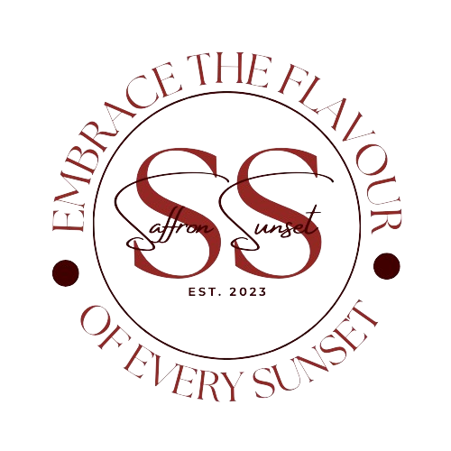
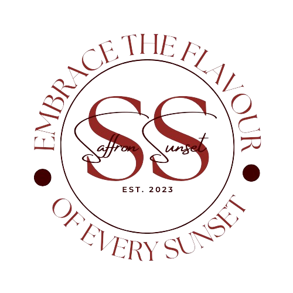

Welcome to Saffron Sunset, where we serve up delicious Mediterranean cuisine on wheels! Our food truck and catering services bring a taste of the Mediterranean to your next event or gathering. At Saffron Sunset, we are committed to sustainability and take pride in sourcing our ingredients from local and organic providers whenever possible. We believe in supporting farmers and producers who share our values of environmental stewardship and ethical practices. We strive to minimize our impact on the planet by using eco-friendly packaging and utensils, and by reducing food waste through careful portioning and thoughtful menu planning. Our menu features a variety of classic Mediterranean dishes, from flavorful falafel and creamy hummus to juicy kebabs and fresh salads. Whether you're craving a hearty meal on the go or planning a special event, we have options to suit every taste and dietary preference. When you choose Saffron Sunset for your catering needs, you can feel good knowing that you're supporting a local business that is committed to sustainability and quality. We take care in preparing each dish with love and attention to detail, so you can sit back, relax, and enjoy the flavors of the Mediterranean. Thank you for considering Saffron Sunset for your next dining experience or event. We look forward to serving you soon!
.png)

 
